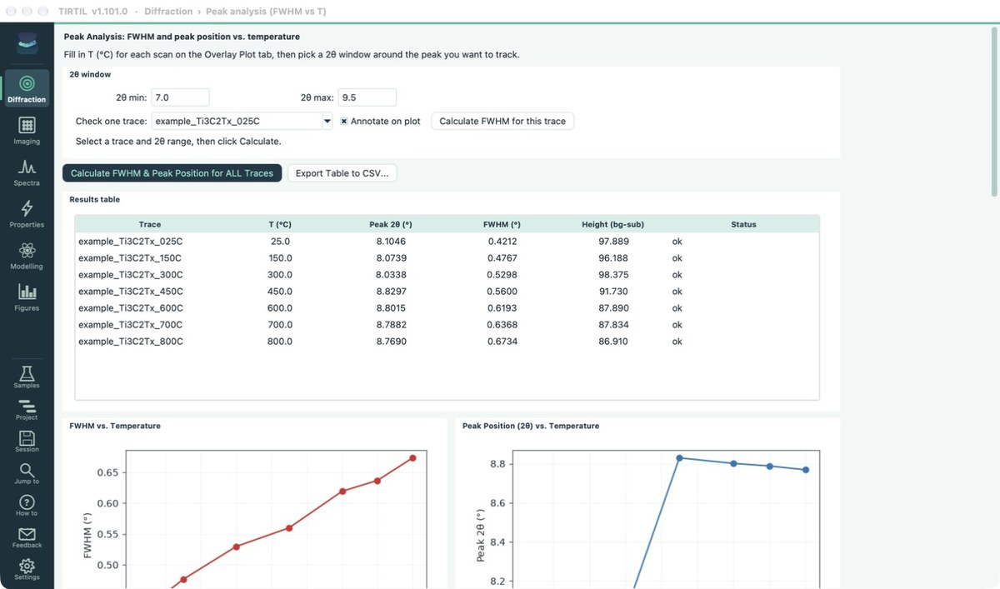
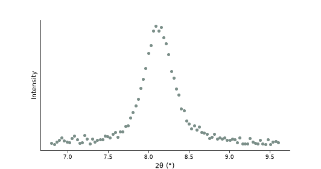

Diffraction
Peak analysis
Peak position, width and lattice parameters against temperature.

Steps
Calculate FWHM for this tracePick a trace and a 2θ window around one peak. The peak is fitted with a pseudo-Voigt: position, height and FWHM.Calculate FWHM & Peak Position for ALL TracesUse the same window on every trace: position and FWHM against temperature.Run Batch AnalysisBatch analysis finds (002), (004) and TiC (220) in each scan and gives c, a and I(004)/I(002) with error bars.Export to CSV...Export the table, or use it in Custom plots and the Figure builder.
How it works

Worked example
(002) at 2θ = 8.12° with Cu Kα: d = λ / (2 sin θ) = 1.5406 / (2 × sin 4.06°) = 10.88 Å, so c = 2d = 21.76 Å. If the FWHM grows from 0.35° to 0.60° on heating, the layers become less ordered (or thinner stacks).
In TIRTIL: How to (⌘/) › Try It With Example Data loads this example.